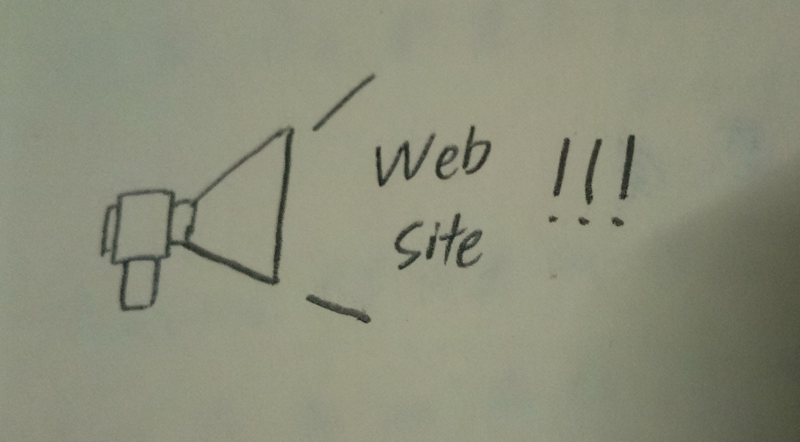

- Describe the behaviours of web server and interaction with browser
-
The behavior of web server and interaction with browser can be describe as client-server system. Web server contain all the information and content, and browser as client request to get these information from the server. After get the request from browser, the server will response to the browser.
- Describe the one tool used to deploy/update a web site.
-
Microsoft Web Deployment Tool. It can be used to migrate the entire web server, and don't require administrative privileges when deploy web application. It also support zipped package as source or destination.
- Identify how the web sites can be promoted.
-

We can promote web sites through some method. First is SEO, which we can optimize the web pages and make the web page can be found in search engine, and have a better result in SERPs (Search Engine Result Pages). Besides that, advertisement also can be used to promote web pages. Advertisement can be through social media, internet and also newspaper. Link exchange also is a method to promote web pages. To use link exchange, we may need to exchange help with other web page owner. Through this, we can promote our web pages in other web pages like forum. In exchange, we also need to share their web pages link. This is a win-win method.